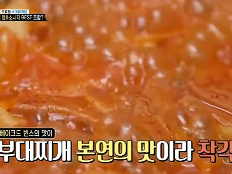
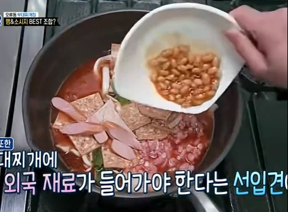
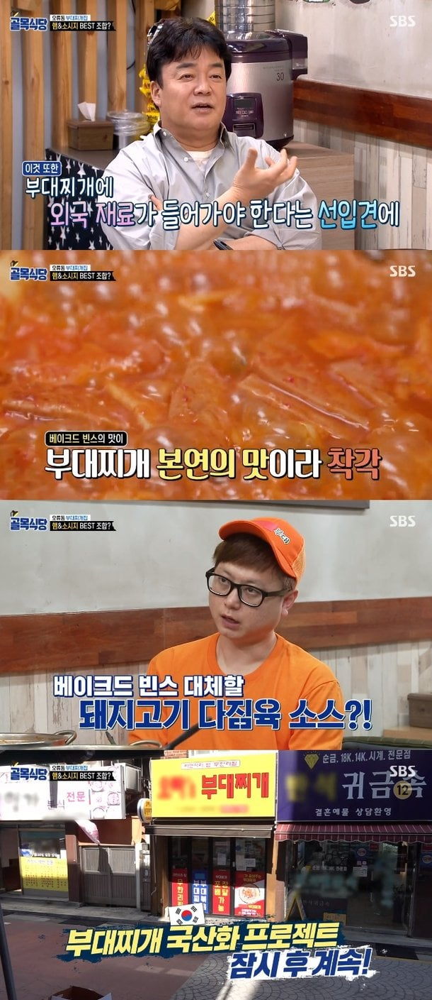
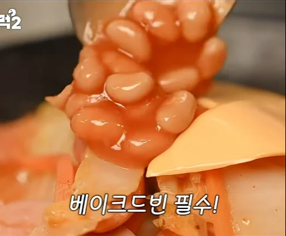
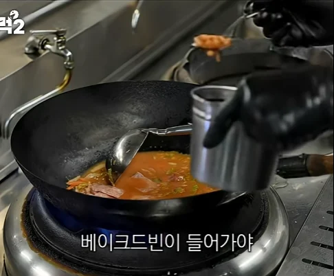
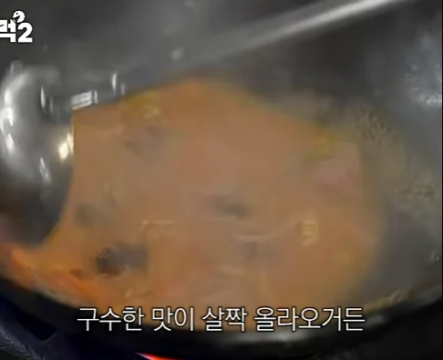

남의 부대찌개



내 부대찌개



남의 부대찌개



내 부대찌개
https://m.fmkorea.com/best/8590544886
꼭 얼굴 숙이고 드시진 않는데?
ㅋㅋㅋㅋㅋㅋㅋㅋ
베이크드빈즈는 부대찌개도 좋지만 카우보이빈즈로 만들어 먹으면 대존맛이지
차이가 뭐죠 통조림님
끈적한 부대찌개보다 맑은부찌가 맛나더라
베이크드 빈즈는 콩의 감칠맛, 설탕의 단맛, 토마토의 산미인데 재료의 개성이 강해서 부대찌개에 넣는 것은 개인적으로 별로더라
난 개인적으론 그거 까지 해야 부대찌개라고 생각함
베이크드 빈즈가 들어가도 괜찮으려면 치즈같은 개성이 강한 식재료들이 같이 들어가야 밸런스가 맞을 거야
단맛과 산미를 기름짐과 짠맛으로 맞추면 낫긴 할 듯
나는 깔끔한 풍미를 좋아해서 안맞더라고
부대찌개는 원래 깔끔한 풍미로 먹는게 아니라 이것저것 다 때려넣은 헤비한 맛으로 먹는거 아니었나...
깔끔한거 좋아하면 이탈리아 음식 먹어야지 뭐
해외콩말고 신토불이 청국장으로 합시다
予 ㅋㅋ
저땐 몰랐는데 지금은 왜 외국재료 언급 했는지 알지
빽햄??
솔직히 나는 안좋아함 안들어가는 부대찌개를 더 좋아함
대전에서는 최네집이 그나마 제일 괜찮은데 여긴 베이크드빈 안들어감
스팸도 외국 재료니까 빽햄 넣으려는 빌드업이네
원래는 된장 케챱들어가는데 된장이랑 케챱대신 베이크드빈 넣는경우도 많이 생겨서
??? 근본이 베이크드빈인데.
사실 나도 먹어본 부대찌개집에서 베이크드빈 넣은 집 많이 못봄
다른거보다 소고기다진거랑 스팸이 제일중요한거같음
베이크드 빈즈 넣는건 사파긴 함
근본인데 안넣는게 사파지
놀부 부대에서 넣기 시작한거라 근본은 안넣는게 맞음
부대찌개의 진짜 근본 유래를 생각하면 그 시기 미군 짬통에서 베이크드 빈즈가 없었다는건 확률상 0퍼에 수렴할텐데
미군부대 근처 부대찌개집에는 빈 안들어감
파주 문산기준
의정부 동두천 송탄 이런곳은 어떤지 모름
먹다가 콩 씹히면 기분 별로임
의정부식은 안넣고 송탄식은 넣는거 아니었나??
송탄 안들어가
많이 먹어라 ㅋㅋ
칠리콘카르네도 넣음 맛있던데
베이크드빈 안들어간건 부찌가 아니야. 뭐 깔끔한 맛? 시원한 맛? 그냥 해장국을 쳐드세요 쉬잇팔 자꾸 베이크드빈 넣는 부찌집 없애지 말고 쉬잇팔
의정부식의 깔끔한 채수베이스 느낌은 민찌들어가는게 맞고. 송탄식의 걸쭉한 느낌은 베이크드빈즈랑 치즈들어가는게 맞음
베이크드빈즈 없으면 그저 햄 넣은 김치콩나물국임
??: 부대찌개에 베이크드빈을 꼭 넣으란 법이 있을까?
줫같은 놈일세
난 콩이 좋아 콩먹어야해
부대찌개에 어묵이 들어가지말란 법은 없을까?
아잇 시발
나여 백종원
저 지점은 몇년째 가고있는데, 햄이 맘에듦. 근데 점점 너프되서 잘안가게됨.
일관성이 없는거야?...
저거 안넣은게 내 입맛엔 맞음
난 저거 따로 사기 아까워서 케찹 넣음
대체가 안되서 짜잔 제가 국산화 제품 출시 했습니당!
이사람은 먹을때 왤케 얼굴을 처박는거임 ..